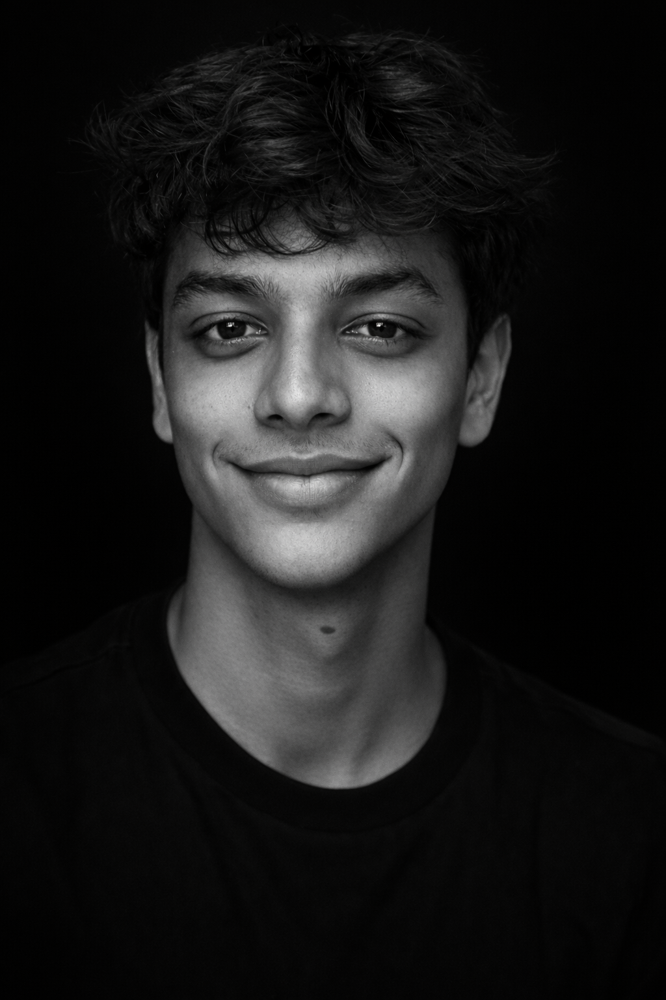
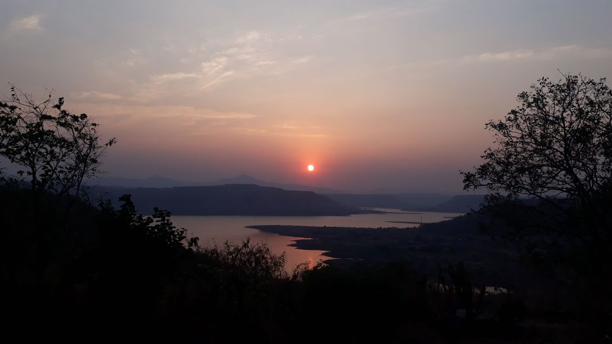
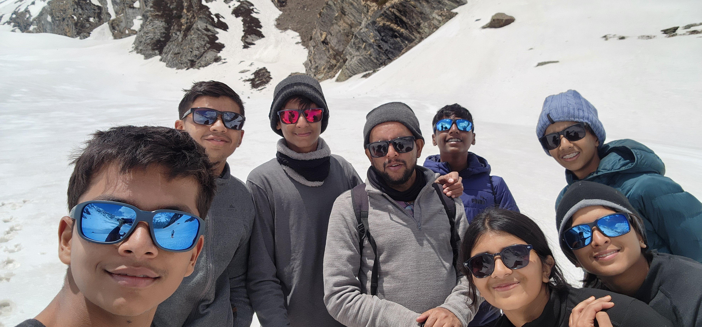
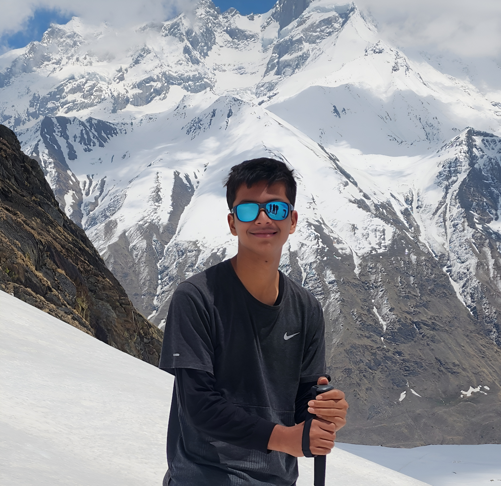
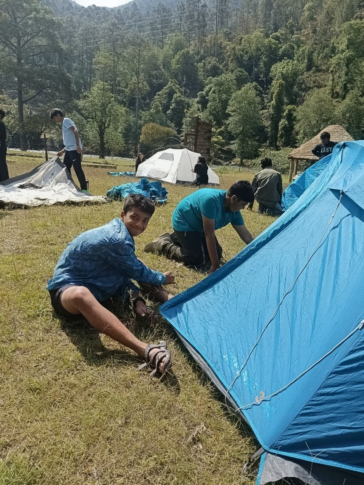
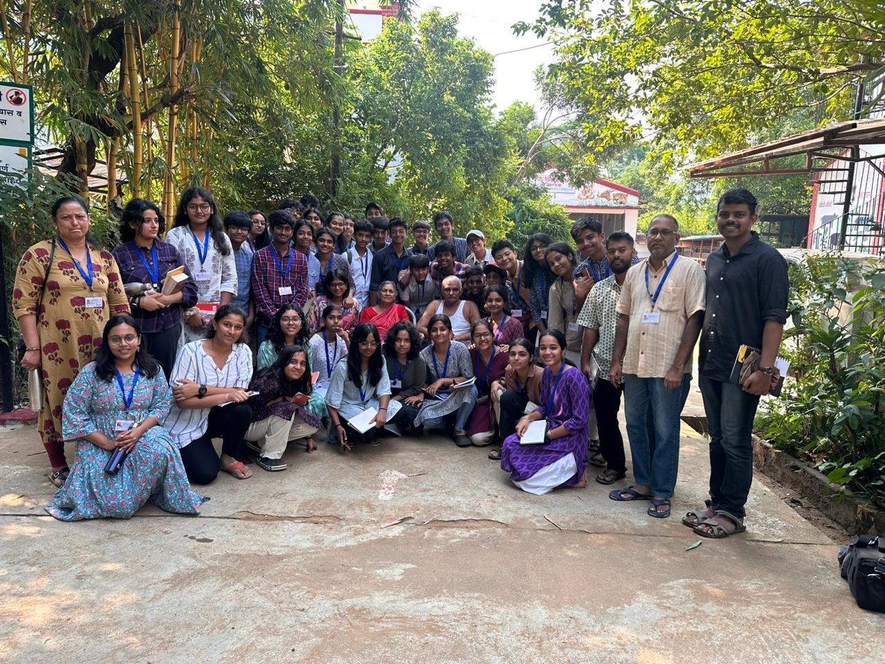

Ranchi → Sahyadri → The World
I build systems, perform on stage, and try to make the complex feel human. From Ranchi, shaped by silence, working on things that matter.

I’m a Grade 11 student at Sahyadri School (KFI), Pune — a boarding school built on the philosophy of Jiddu Krishnamurti, where learning isn’t confined to syllabi and growth isn’t measured only in grades.
My interest in computer science isn’t about technology for its own sake. It’s about systems — how they’re structured, how decisions propagate through them, and why they break. Game algorithms were my entry point: small enough to fully understand, rich enough to reveal fundamental principles. My research on trust dynamics in multi-agent systems is the natural extension: what happens when the agents inside the system are themselves adaptive, strategic, and potentially deceptive?
I think best when I can visualise what’s happening. Every project I build includes infrastructure for observation — not because it’s required, but because I don’t trust my understanding until I’ve watched the system run. Theory describes the map. Empirics show the territory.
Outside CS: I act in theatre (lead roles in dramatic Hindi productions), captain my school’s handball team, trek at high altitude, and edit two school publications. These aren’t separate from my technical work — they’re parallel expressions of the same interest: making complex systems feel human.
I’m applying to study Computer Science and Mathematics at universities where I can pursue both rigorous theory and hands-on research. I want to work on problems that matter — and I’ve learned that the problems worth solving are rarely the ones that yield quickly.

Sahyadri School (KFI), Pune
Games are the smallest environments where the hardest problems in computer science appear in their purest form.
A chess engine doesn’t just play chess — it makes sequential decisions under uncertainty, optimises across exponentially large search spaces, and manages the fundamental tradeoff between exploration and exploitation. These are the same problems that power autonomous vehicles, trading algorithms, and AI systems operating in the real world.
I use games as laboratories. The goal isn’t entertainment — it’s to study decision-making, constraint satisfaction, and adversarial reasoning in environments where I can control every variable, measure every outcome, and actually understand what’s happening inside the system.
The most interesting findings rarely come from theory alone. They come from running the algorithm, watching it behave, and asking: why did that happen?
Projects exploring how decision-making works, how technology can serve the underserved, and where systems break.
Game Algorithms Engine
Implementations of minimax with alpha-beta pruning (Connect 4), constraint satisfaction solvers (N-Queens), and entropy-based search (Mastermind) — each with interactive HTML visualisers and empirical benchmarks. Built to explore how strategic decision-making emerges in constrained systems — and how it breaks.
The most interesting finding: an algorithm’s real-world efficiency depends not on theoretical complexity alone, but on the ratio between the cost of its optimisation strategy and the savings that strategy produces.
Sage — AI Phone Assistant for Seniors
An Android app bridging the digital literacy gap for India’s 140 million seniors who own smartphones but lack the confidence to use them. Unlike tools that merely instruct, Sage operates the phone on the user’s behalf — leveraging Android’s Accessibility Service API to execute tasks like sending WhatsApp messages and adjusting settings via voice commands, requiring only a single confirmation tap. Combines autonomous screen control, a daily digest of tips and scam alerts, and a bilingual conversational assistant powered by Claude.
Lifeline — Crisis Communication for Conflict Zones
An AI-assisted mobile app for civilians in active conflict zones, integrating real-time safe-route navigation, survivor proximity mapping, government and humanitarian broadcast aggregation, and psychological wellbeing support into a single offline-capable platform. Built around three stages of crisis response — immediate physical safety, coordinated evacuation, and long-term emotional recovery. Won 1st place at Sahyadri School’s Hilltop Entrepreneur competition.
Start with the structure, not the code.
Before writing any implementation, I map the problem space: What are the constraints? What’s the branching factor? Where does complexity actually come from? The code is the last step — understanding is the first.
Build to observe, not just to solve.
Every project includes visualisation infrastructure: not as a feature, but as a debugging and understanding tool. I’ve learned more from watching algorithms behave unexpectedly than from reading about how they should behave.
Measure, don’t assume.
Theoretical complexity tells you the shape of a problem. Empirical benchmarking tells you what actually happens. I build measurement into every system: nodes evaluated, time elapsed, pruning rates, convergence behaviour. The numbers often contradict expectations — and that’s where learning happens.
Look for cross-system patterns.
The most useful insight from this project didn’t come from any single algorithm — it came from comparing all three. Each used a different optimisation strategy (pruning, propagation, entropy-based search), and each demonstrated the same principle: optimisation has overhead, and overhead must be justified by savings.
This meta-pattern — that the cost of being clever is itself a variable to optimise — now shapes how I think about every system I design.
ICSE Board Examinations · 2024
Aggregate: 99%
Physics 100 · Biology 100 · Mathematics 99 · Computer Science 99. Top academic performance in national standardised examinations.
Ashoka Young Scholars Programme · 2025
Selected for competitive ten-day residential programme
Technology, Data & Computer Science track. Engaged with faculty seminars on AI, privacy, and data-driven decision-making. Connected with Prof. Sudheendra Hangal (Stanford CS), whose recommended reading (Thinking Fast and Slow, How to Solve It) directly shaped my approach to problem decomposition.
Polygence Research Publication · 2025
From Game-Theoretic Poker to the Collapse of Trust
Modelling Strategic Behaviour in Multi-Agent Systems
Independent research using Kuhn Poker as a formal environment to study trust dynamics among adaptive agents. Connects to active questions in AI safety and multi-agent coordination.
Hilltop Entrepreneur · 1st Place · 2024
Lifeline — AI-equipped communication app for civilians in conflict zones
Won Sahyadri School’s Shark Tank competition. Presented before the full school assembly.
UNESCO ESD Certification
Sustainable construction training at Hunnarshala Foundation, Bhuj. View certificate →
This is not a hobby. Each play was chosen because it had something to say. The stage as a social tool — for ideas that wouldn’t otherwise reach the people who needed to hear them.
The Origin
In 9th grade, I was cast as an old man — partly because my Hindi was strong enough. In one rehearsal, something clicked. I realised the character was exactly like someone I’d spent years watching closely: wise and childish at the same time. I started crying in the middle of a sad scene. My teacher, who was directing, started crying too. That was the day I became the old man of the school.
| Play | Role | Genre | Watch |
|---|---|---|---|
| Vriksha | Lead: Pandya Ji | Dramatic Hindi | YouTube ↗ |
| Anyaay | Lead: The Farmer | Tragic Hindi | — |
| Rehearsal | Bhojpuri Farmer | Comedy Hindi | — |
| Twelve Angry Jurors | Juror #9 | Bilingual Thriller | YouTube ↗ |
Vriksha — The Full Story
A father watches his son turn into a tree. He grieves. The tree produces gold. The family gets rich. They expand their house. The building plans conflict with the tree. They cut it down. Only the granddaughter is human enough to realise what they’ve done.
Half the audience was in tears. The question they went home with: does greed get in the way of human connection?

Twelve Angry Jurors — Full Performance
A bilingual adaptation of Reginald Rose’s courtroom drama. Twelve jurors deliberating a single boy’s life — the only place in theatre where conviction and doubt are the entire stage. I played Juror #9: the old man who sees what nobody else is willing to see.

Lead Editor of Tiwai Tales (school newsletter) and Ninad ’26 (annual magazine). Oversaw content, coordinated student editorial teams, managed design and publication.
Emcee for Farewell ’24. Interviewed Master Manjunath — known for his role as Swami in Malgudi Days — on stage before the entire school. A conversation about craft, memory, and what it means to inhabit a character for decades.
Anchor of the Almabase Committee — led the initiative to build a digital platform connecting Sahyadri alumni with current students.
Hosted the Farewell ’26 ceremony — anchored the event for the graduating batch, coordinating performances, speeches, and tributes on stage.

Farewell ’26
Treks
Bali Pass, Uttarakhand
16,000 ft · May 2024
Pandav Patthar
12,500 ft · May 2023
Inme Tons, Uttarakhand
April 2023
Community
Lok Biradari Prakalp, Hemalkasa
Volunteered at tribal school
Anandvan Ashram
Teaching visually impaired students forced me to rethink how I explain ideas without relying on visual intuition. It made me more aware of how much of learning is built on assumptions we don’t question.
UNESCO ESD Certification
Hunnarshala Foundation, Bhuj
Sustainable earthen construction
Sports
Handball Team Captain
Basketball Camp Conductor
Mentored younger students
Volleyball & Athletics
School representation
Mountains

16,000 ft · Certificate

12,500 ft · Certificate

Uttarakhand · Certificate
Community

Some questions I’m sitting with right now:
“What happens when you design AI systems to cooperate — but cooperation itself becomes the exploit?”
“I keep thinking about how Vriksha’s audience saw greed on stage and recognised it in themselves. Theatre as a mirror, not a lesson.”
“Sahyadri taught me that slowness is not the opposite of ambition. It might be the precondition for it.”
A Silent Song
On silence, solitude, and what Astachal taught me about being present. Sahyadri’s Python Hill, Krishnamurti, and the difference between being alone and being lonely.
Read full article →Let’s talk.
I’m always interested in research collaborations, interesting problems, and conversations that don’t have easy answers.